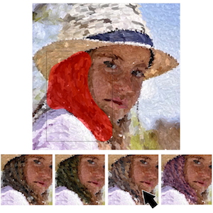

|
Shuhei Kodama / PhD studentVisual Computing Lab.Information, Communication, and Media Design Engineering Graduate School of Advanced Science and Technology Tokyo Denki University email: s-kodama (at) vcl.jp [Japanese] |
Projects
|  |
Creativity Enhancement of Painterly Rendering using a Suggestive Interface Shuhei Kodama, Pierre Poulin, Tomoaki Moriya, Tokiichiro Takahashi Computers & Graphics |
Publications
Peer-Reviewed Journal Papers
- Shuhei Kodama, Pierre Poulin, Tomoaki Moriya and Tokiichiro Takahashi: Creativity Enhancement of Painterly Rendering using a Suggestive Interface, Computers & Graphics, vol.71, pp.42-54, 2018.
Peer-Reviewed Short Papers and Posters
-
Momoka Kawai, Shuhei Kodama and Tokiichiro Takahashi: A Free Pour Latte Art Support System by Showing Paths of Pouring Milk Using Design Templates, Proc. of the 6th IIEEJ International Conference on Image Electronics and Visual Computing (IEVC 2019), 2A-2, 2019.
-
Hina Yumoto, Shuhei Kodama and Tokiichiro Takahashi: A real-time rendering method based on contour drawing techniques in Japanese ink painting, Proc. of the International Workshop on Advanced Image Technology 2019 (IWAIT 2019), no. 75, 2019.
-
Yuta Yamabe, Shuhei Kodama, Tomoaki Moriya, Yuki Morimoto and Tokiichiro Takahashi: Evaluation of Randomness and Uniformity of Painterly Style Image Generation Methods, Proc. of the International Workshop on Advanced Image Technology 2017 (IWAIT 2017), no. 3D-5, 2017.
-
Shuhei Kodama, Tokiichiro Takahashi: Suggestive Painterly Style Image Generation System to Satisfy User Preferences, ACM SIGGRAPH 2016 Posters, no. 17, 2016.
-
Yuta Yamabe, Shuhei Kodama, Tomoaki Moriya, Yuki Morimoto and Tokiichiro Takahashi: Fast Painterly Style Image Generation Based On Fast Sampling by Paving Disks with Random Radii, Proc. of the International Workshop on Advanced Image Technology 2016 (IWAIT 2016), no. 1B-1, 2016.
-
Shuhei Kodama, Junichi Sugita, Tomoaki Moriya and Tokiichiro Takahashi: Fast Generation of Various Painterly Style Images Based on Scalable Poisson Disk Pre-Sampling Technique, Proc. of 2015 Joint Conference of International Workshop on Advanced Image Technology and International Forum on Medical Imaging in Asia 2015 (IWAIT and IFMIA 2015), no. 373, 2015.